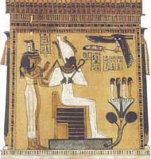

Осіріс, в єгипетській міфології бог продуктивних сил природи, владика загробного світу, суддя в царстві мертвих. Осіріс був старшим сином бога землі Геба і богині неба Нут, братом і чоловіком Ісіди. Він царював на землі після богів Pa, Шу і Геба і навчив єгиптян землеробство, виноградарству і виноробству, видобутку і обробці мідної та золотої руди, лікарському мистецтву, будівництву міст, заснував культ богів.
Сет, його брат, злий бог пустелі, вирішив погубити Осіріса і виготовив саркофаг за міркою старшого брата. Влаштувавши бенкет, він запросив Осіріса і оголосив, що саркофаг буде подарований тому, кому доведеться впору. Коли Осіріс ліг в capкофаг, змовники зачинили кришку, залили її свинцем і кинули у води Нілу.
Вірна дружина Осіріса, Ісіда, знайшла тіло чоловіка, витягла чудесним чином приховану в ньому життєву силу і зачала від мертвого Осіріса сина, названого Гором. Коли Гор виріс, він помстився Сету. Своє чарівне Око, вирване Сетом на початку битви, Гор дав проковтнути мертвому батькові. Осіріс ожив, але не захотів повернутися на землю, а, залишивши трон Гору, став царювати і вершити суд в загробному світі. Зазвичай Осіріса зображували людиною із зеленою шкірою, що сидить серед дерев, або з виноградною лозою, що обвиває його фігуру.
Вважалося, що, подібно до всьому рослинному світу, Осіріс щорічно вмирає і відроджується до нового життя, але запліднююча життєва сила в ньому зберігається навіть в мертвому. В елліністичну епоху Стародавнього Єгипту Осіріс ототожнювався з грецьким богом Діонісом.